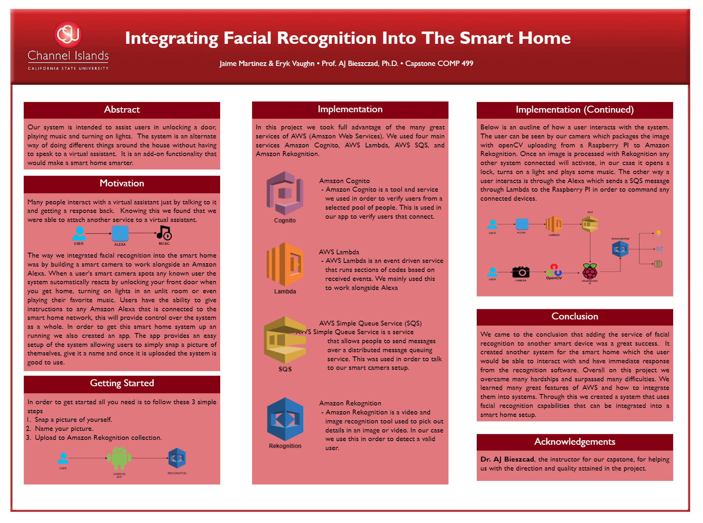
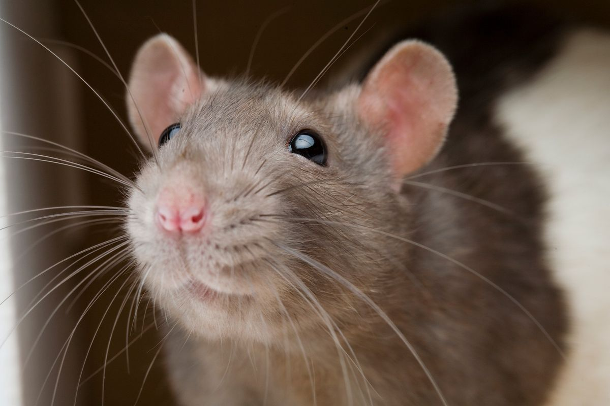

My name is Eryk Vaughn,I’m a recent graduate (June 2020) from Channel Island State University majoring in
Computer Science with a minor in mathematics. I attended Foothill Technology High School, a charter school that emphasized technology based
curriculum. After building my first computer I found my passion and chose Computer Science as
my field of study. Apart from all the standard programming courses, I thoroughly enjoyed the
courses that specialized in computer vision and machine vision. After several semesters this
interest culminated into my Capstone project, equipping an Amazon Alexa with the ability to
use facial recognition and culminated based on the individual recognized.
During my final year of university, I interned at DAC International Inc., a manufacturer providing
an array of automated lathes and mills used for contact lens manufacturing. I worked in many
disciplines while at DAC ranging from UI/UX design, software engineer, software architect, and
DevOp. During my time at DAC I found myself becoming a well rounded individual with the
ability to adapt to many new environments and design challenges.
Eryk Vaughn
I have experience in many fields ranging from software engineering, warehouse work, film data management, audio technical work, sales force, customer service, garage door technician, and much more. If you would like a copy of my resume feel free to click the link below and contact me.
Programming Languages I know:
Java
C
C++
Java Script
HTML
C#
PORTFOLIO
MY WORK
Here are some of my larger projects. Hover over the images to learn more
Table Setter
Phone App
This is a phone app that stores a database of board games and user accounts,
with this information it sorts through which games different users like and is able to pick a
board game for users to play. I worked on this project with two other students using Agile software development methods.
For this project i was not only the lead software architect but also the scrum master for this class project.
If you follow the link you will find my Github page with a working version of the app and all the documentation.

Integrating face recognition into Amazon Alexa
Capstone project
As my capstone project before graduation, myself and one other person developed a method for integrating
facial recognition into an Amazon Alexa. We wired a camera to an Alexa and programmed an AWS sever along
with a companion app to send a user account and images to the Alexa to generate a list of people it knew.
Once a known person was found by the Alexa it could open your, door play your favorite tunes, and even turn your lights on.
DAC International
Software Engineer
During my time for university I picked up a Software Engineering role at DAC International.
During my time at DAC i found myself in an R&D role working on a new automation system for contact lens
manufacturing. During this Year long project i worked on everything from Software Architecture for the
automation system, UI design for industrial operators, and even some Dev Op on the latest software being rolled out.
2020 Presidential Election
Teksystem lead tech for city of Ventura
For the 2020 Presidential Election the county of Ventura outsourced most of its IT roles
to a company called TEKsystem. TEKsystem hired me on for this project to be the lead tech
for the city of Ventura, Santa Paula, and Ojai. My job was to provide high level system repairs
and also manage a team of IT member at each polling place by providing in person and over the
phone support to each of the polling places in those three cities.

Rat Guard
Freelance Software Developer
A local Ventura county business man hired me on as a freelance software
developer in order to help his new company Ratguard. Currently I have
been designing a website for this new start up company, with talks of
designing an in house inventory management and sales tool.